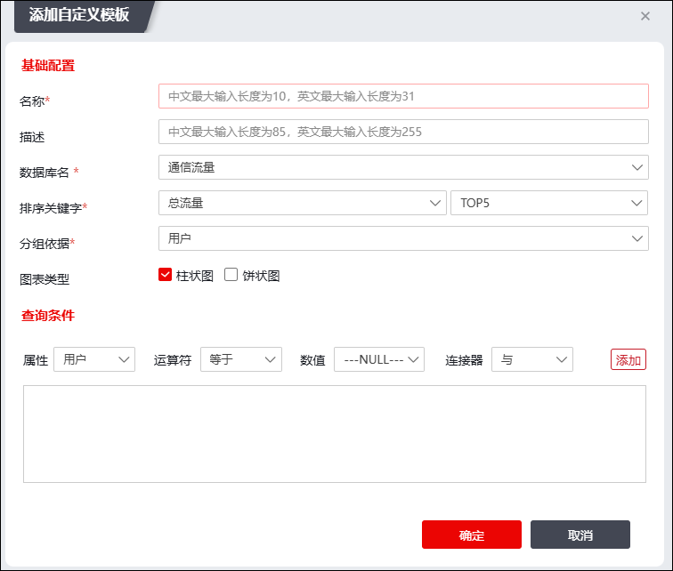

| 步骤1 | 选择 ，进入报表模板页面。 |
| 步骤2 | 选择“自定义模板”页签，点击“添加”，弹出如下的“添加自定义模板”窗口。 |

在设置报表模板时，各项参数的具体说明如下表所示。
参数 |
说明 |
|---|---|
名称 |
必填项，设置自定义报表模板的名称。 |
描述 |
设置报表模板的具体说明。描述信息可以方便管理员区分不同的报表模板。 |
数据库名 |
设置报表模板数据的来源数据库。可选项：通信流量、上网行为、威胁统计、DDOS攻击统计、工业安全数据库、暴力破解数据库、扫描探测数据库。 |
排序关键字 |
选择报表排序的关键字。并可设置排序数为TOP5、TOP10、TOP25、TOP50、TOP100。 说明： 数据库名称为“通信流量”时，可选项：总流量、上行流量、下行流量； 数据库名称为“上网行为”时，可选项：行为次数； 数据库名称为“威胁统计”时，可选项：行为次数； 数据库名称为“DDOS攻击统计”时，可选项：行为次数； 数据库名称为“工业安全数据库”时，可选项：行为次数； 数据库名称为“暴力破解数据库”、“扫描探测数据库”时，可选项：行为次数； |
分组依据 |
选择报表分组的依据。 说明： 数据库名称为“通信流量”时，可选项：用户、应用、客户端IP、服务器端IP、链路； 数据库名称为“上网行为”时，可选项：用户、客户端IP、服务器端IP、应用、协议、网站类别； 数据库名称为“威胁统计”、“暴力破解数据库”、“扫描探测数据库”时，可选项：威胁事件名称、攻击来源、受攻击主机； 数据库名称为“DDOS攻击统计”时，可选项：威胁事件名称、受攻击主机； 数据库名称为“工业安全数据库”时，可选项：应用协议、源IP、目的IP。 |
图表类型 |
选择报表统计图的类型。可选项：柱状图、饼状图。支持多选。 |
查询条件 |
选择报表数据库的查询条件。按需配置参数后点击【添加】按钮即可添加查询条件项。支持添加多项查询条件。 |
配置完成后，点击【确定】保存当前自定义报表模板。